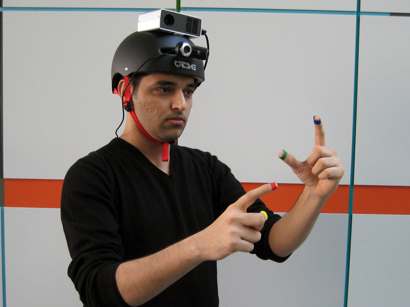

Técnicas de investigación
Estado del arte en investigación para dispositivos móviles
Contribuciones
Micro-interacciones
Precursor
Prototipado
SixthSense

SixthSense
Métodos de "User research"
- Actitud. Entender o medir las creencias de los usuarios. La información proviene del usuario.
- Comportamiento. Entender lo que le usuairo hace con mínima interferencia del método empleado.
- Cualitativos.
- Datos obtenidos directamente de observar a los usuarios
- El análisis de los datos no es matemático
- Cuantitativos.
- Datos obtenidos indirectamente a partir de encuestas, logs del servidor...
- Grandes cantidades de datos que pueden analizarse automáticamente.
Objetivos según aproximación
- Natural.Minimizar la interferencia entre el observador y el usuario
- Guión.Se siguen pasos similares con los participantes para poder comparar.
- Descontextualizados. No se usa el producto. Se quiere examinar más allá del producto.
- Hibridos.Combinan aspectos de los anteriores.
Catálogo de métodos de "User research"

Estudios de usabilidad

- Los usuarios participan de uno en uno.
- Completan tareas en un prototipo mientras hablan en voz alta.
- Resultados:
- Detectar problemas de usabilidad
- Entender el modelo mental del usuario
Estudios etnográficos
- Se observa a los participantes en su entorno natural
- Entender el contexto del usuario: estilo de vida, cultura, procesos, atajos...
- Identificar necesidades y problemas
Focus groups
- Conversación con un grupo de 6-8 usuarios sobre sus reacciones a un producto o servicio
- Entender las expectativas de los usuarios
- Las respuestas se ven afectadas por: dinámicas de grupo y predicciones de uso futuro.
Diseño participativo
- Un grupo de 4-8 usuarios diseña su experiencia ideal
- Una conversación más profunda sobre el problema
- Los diseños obtenidos ilustran las necesidades, pero no pueden ser tomados como soluciones.
Usability benchmarking
Medir la usabilidad
Distintos de los estudios de usabilidad:
- Permite comparar con otros productos o versiones previas.
- No se busca entender el problema
- No se pide que los usuarios hablen.
- Los usuarios de un mismo estudio deben usar una misma versión del producto.
Medir:
- Éxito/Fracaso en un intervalo de tiempo
- Tiempo en una tarea
- Número de errores al completar una tarea
Ejemplo
- Tarea.Comprar tres productos del catálogo.
- Objetivo.75% de los participantes deben completar la compra en menos de 3 minutos.
Resultados

Relevancia estadística
- El tamaño de la muestra afecta la precisión del resultado
- Tomar múltiples mediadas de las tareas principales: identificar el facto de aprendizaje
Eye tracking
Capturar lo que el usuairo ve
- Lo que ven no siempre es lo que les gusta o quieren
- La utilidad depende de la tarea (funciona mejor para objetivos simples)
Los resultados se presentan como:
- Heatmaps (mapas de calor)
- Secuencias
Soporte móvil
Tobii mobile
SMI glasses
No debemos considerar la fuente visual de forma aislada
La tarea influye en lo que el sujeto mira
Yarbus, A. L. (1967), Eye Movements and Vision, New York: Plenum.
Herramientas para eye tracking
A/B testing
Analíticas: tracking
Identifica los eventos relevantes
Búsquedas con 0 resultados.